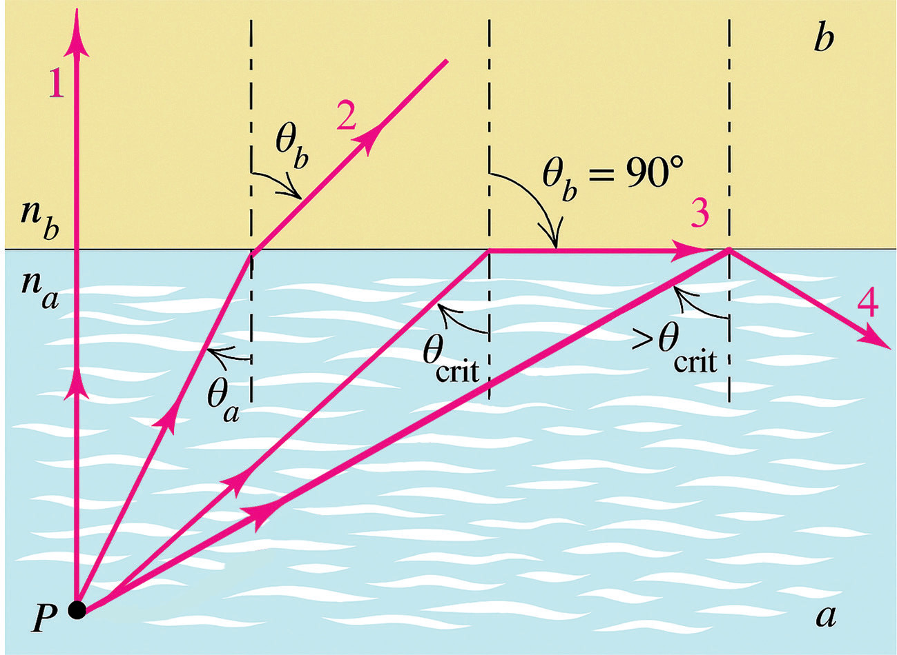

light travels from a denser medium to a lighter one , the refracted light ray bends away from the normal. It is also known that the angle of refraction and hence the amount by which light bends away from the normal depends on the angle of incidence. Therefore, the larger the angle of incidence, the more the light bends away from normal. Yet, one could ask, when light travels from a denser medium to a less dense medium, how far away from normal can light bend?
The answer to this question is that the bending of light can only get as far as 90° without leaving the medium. Therefore, there is an angle of incidence of light for which the angle of refraction is 90°. This angle of incidence is known as the critical angle and is typically denoted by a letter c. When the angle of incidence becomes greater than the critical angle, light is not refracted anymore; instead, light is reflected back into the same medium from which it is coming. This phenomenon is known as total internal reflection. Therefore,

Total internal reflection only takes place when both of the following two conditions are met:
- 1. Light travels from an optically denser medium towards a less dense medium.
- 2. The angle of incidence is greater than the critical angle.
Total internal reflection will not take place unless the incident light is travelling within the more optically dense medium towards the less optically dense medium.
For example, TIR will happen for light travelling from water towards air, but it will not happen for light travelling from air towards water. On the other hand, TIR occurs only if the angle of refraction exceeds 90°. When the angle of incidence equals the critical angle, the angle of refraction is 90° (Figure 5.9 (a)). Also, when the angle of incidence is greater than the critical angle, all the light undergoes total internal reflection as shown in Figure 5.9 (b).